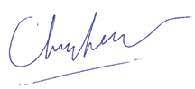

Association
Internationale www.godsdirectcontact.org ; courriel : SMCHIA@Godsdirectcontact.org Tél : 1-408-218-2635 ; fax : 1-928-222-3333 Le 10 avril 2012Excellents dirigeants gouvernementaux, éminents et vénérables chefs des religions estimées du monde, médias et nobles membres du public, des médias, C’est avec une sincère gratitude que nous avons l’immense plaisir de partager avec vous cette bonne nouvelle : la vie de notre précieuse planète a été prolongée d’un demi-siècle, et cette continuation va s’amplifier. Nous vous adressons nos sincères remerciements pour tous vos nobles efforts, qui ont permis de préserver la Terre et ses habitants. Ces actions sages et bienveillantes incluent la participation à des campagnes et l’adoption de lois encourageant un mode de vie plus sain, une paix plus grande, l’unité et le respect des droits civiques, le bien-être des animaux, les actions humanitaires, les programmes sociaux, ainsi que la protection de l’environnement. Bien que nous ne nous soyons pas rencontrés personnellement, je sens que nous travaillons comme une équipe afin d’assurer et de favoriser l’existence harmonieuse de toutes formes de vie sur notre magnifique planète. Plus que jamais, nous avons hâte de poursuivre avec vous ces nobles efforts afin d’offrir à tous les êtres un monde pacifique, plus avancé et abondant.
Je vous prie d’agréer l’expression de ma considération distinguée, 
Maître Suprême Ching Hai |